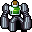

歩く蒸留器 Walking alembic
英語版 CrawlWiki の記事「Walking alembic」(0.33 向け、2025-10-26 版)の翻訳です。原文の著者は編集履歴をご覧ください。
この記事は 0.33 の時点の内容で、最新の 0.34 とは違うところがあるかもしれません。
| 歩く蒸留器 9  | |
|---|---|
| HP | 38-78 |
| HD | 9 |
| XP | 350 |
| 速度 | 10 |
| AC | 9 |
| EV | 8 |
| 意志力 | ∞ |
| 攻撃1 | 19(拳: 毒煙の噴出)
|
| 耐性 | rF+ rC+ rElec rPois+++ rDrown rMiasma rN+++ rTorm |
| 弱点 | なし |
| 生息地 | 陸上 |
| 知能 | 無知性 |
| 使用 | 扉を開ける |
| 分類 | 非生物 |
| 体格 | 大きい |
| 種類 | ゴーレム、歩く蒸留器 |
| フラグ | 呼吸しない 戦士 |

| 近接戦闘の摩擦を利用して様々な有用な水薬を醸造する、移動可能で戦闘もこなす錬金術の製造所だ。合成を完了させるのに十分な熱が溜まると、完成した水薬を近くの味方に自動的に配り、そしてばらばらに崩れ落ちる。 |
基本情報
歩く蒸留器は、アリステイアの歩く蒸留器の呪文で作り出される鍛造術の構造物だ。敵を殴ると毒の雲を生み出し、薬を醸造する。
蒸留器が誰かを殴ると、相手のいるマスに雲を1つ、その近くに3〜4つ生み出す。4〜6回攻撃すると薬を醸造し、術者とその仲間に配ってからばらばらに崩れ落ちる。
小技
蒸留器は毒の雲をたくさん生み出すので、毒の燃焼を持っていれば、それを炎の雲に変えられる。
変更履歴
- 歩く蒸留器は 0.33 で、アリステイアの歩く蒸留器の呪文の一部として追加された。